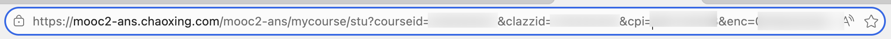

如何使用JSBridge Hook与UA伪装实现学习通Web端参加手机考试
什么叫只有Web端没有被邀请参加派对? 这不公平!
学习通有许多考试只允许手机参加，而本文通过 UA 伪装、参数构造与 JSBridge Hook 实现了在电脑浏览器上参加这类考试。
免责声明：本文仅供技术学习交流，请遵守学校相关规定，不要做违规的事情!
(那就是要做啊我看)
实验原理简析
学习通的仅手机端限制主要依赖以下机制：
| 层级 | 检测方式 | 绕过方法 |
|---|---|---|
| HTTP层 | User-Agent 判断 | UA伪装插件 |
| 前端路由 | URL参数校验 | 手动构造URL |
| JS层 | 设备特征检测 | Chrome设备模拟 |
| Native层 | JSBridge通信 | Hook模拟APP响应 |
| 安全层 | 签名验证 | 构造签名响应 |
我们发现:服务端未严格验证签名来源，仅依赖前端+JSBridge限制
技术细节（逆向分析）
JSBridge 通信机制
学习通 APP 使用 JSBridge 实现网页与原生 APP 的通信：
1 | 网页 → jsBridge.postNotification('CLIENT_FORM_SIGN', data) |
在电脑浏览器中，如果我们只通过修改UA与构造URL来访问考试jsbridge:// 将协议无人处理，导致流程中断。
关键 JSBridge 事件
| 事件名 | 用途 |
|---|---|
CLIENT_DEVICE_ID |
获取设备唯一标识 |
CLIENT_FORM_SIGN |
表单签名验证 |
CLIENT_CHECK_URL_TYPE |
URL类型检查 |
CLIENT_EVERISK_INFO_CHECK |
风险检查 |
签名回调格式
CLIENT_FORM_SIGN 回调期望的响应格式：
1 | { |
测试环境
- 时间：2025年12月
- 浏览器：Edge / Chrome
- 学习通版本：6.7.1
准备工作
安装浏览器插件
安装 User-Agent Switcher and Manager（Chrome/Edge/Firefox 均可）
获取学习通手机端 UA
在手机学习通内置浏览器中访问：
1 | https://www.whatismybrowser.com/detect/what-is-my-user-agent |
复制显示的 User-Agent 字符串，格式类似：
1 | Mozilla/5.0 (iPhone; CPU iPhone OS 26_1like Mac OS X) AppleWebKit/605.1.15 |
提示：UA 必须包含
ChaoXingStudy关键字，普通手机浏览器 UA 无效学习通访问外部链接的小技巧：在笔记里直接写一个链接，点开访问

操作步骤
第一步：提取课程参数
- 电脑登录学习通，进入目标课程页面
- F12 打开开发者工具 → Elements 面板
- Ctrl+F 搜索
courseId、classId等参数
也可以在 URL 中找到：
第二步：获取考试ID
启用 UA 伪装（设置为手机端 UA）
构造并访问以下链接（填写自己的参数）：
1 | https://mooc1.xuexi365.com/exam-ans/exam/test?courseId=【courseId】&classId=【classId】&ut=s&cpi=【cpi】&enc=【enc】&openc=【openc】 |
F12 → Ctrl+F 搜索
TestRelationInfo找到类似内容：
1 | TestRelationInfo = {"7707727":{"limitTime":"60","expiredAutoSubmit":"1"}}; |
- 记录其中的数字 ID（如
7707727），这就是 taskrefId
提示：enc 参数有时效性，过期需重新获取
第三步：进入考试页面
- 构造最终链接：
1 | https://mooc1-api.chaoxing.com/exam-ans/exam/phone/task-exam?taskrefId=【taskrefId】&courseId=【courseId】&classId=【classId】&ut=s&cpi=【cpi】 |
确保 UA 伪装已启用
访问链接
- F12 打开开发者工具 → 点击左上角 设备模拟图标（或
Ctrl+Shift+M）
第四步：注入 Hook 代码
在 Console 中执行以下代码：
1 | // ========== 1. 禁用反调试 ========== |
第五步：开始考试
- 按
Ctrl+F8禁用所有断点（学习通网页检测到F12打开会强制debugger） - 点击”开始考试”按钮
- 完成验证码验证
- 成功进入考试！
参数速查表
| 步骤 | 链接模板 |
|---|---|
| 获取 taskrefId | https://mooc1.xuexi365.com/exam-ans/exam/test?courseId=&classId=&ut=s&cpi=&enc=&openc= |
| 进入考试 | https://mooc1-api.chaoxing.com/exam-ans/exam/phone/task-exam?taskrefId=&courseId=&classId=&ut=s&cpi= |
注意事项
- enc 参数有时效性，过期需重新获取
- UA 必须是学习通 APP 的，普通手机浏览器 UA 无效
- 考试过程中不要关闭 UA 伪装和设备模拟
- Hook 代码需要在每次刷新页面后重新执行
参考资料
本博客所有文章除特别声明外，均采用 CC BY-NC-SA 4.0 许可协议。转载请注明来源 LEN's Web！